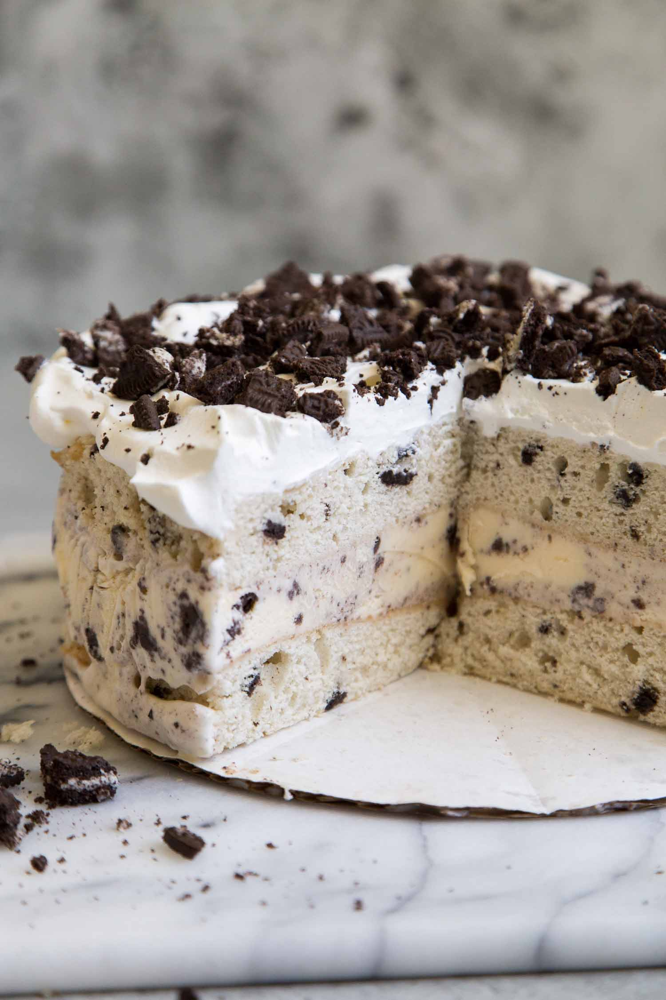

Cookies & Cream Cake

Ingredients
CAKE:
- 1 package white cake mix (regular size)
- 1-1/4 cups water
- 3 large egg whites
- 1 cup coarsely crushed Oreo cookies (about 8)
FROSTING:
- 1/2 cup shortening
- 4 to 4-1/2 cups confectioners' sugar
- 1/4 cup milk
- 1 teaspoon vanilla extract
- Whole and crushed Oreo cookies, optional
Directions
- In a large bowl, combine the cake mix, water, oil and egg whites; beat on low speed for 30 seconds. Beat on high for 2 minutes. Gently fold in crushed cookies.
- Pour into two greased and floured 9-in. round baking pans. Bake at 350° for 30-35 minutes or until a toothpick inserted in the center comes out clean. Cool for 10 minutes before removing from pans to wire racks to cool completely.
- For frosting, beat the shortening, sugar, milk and vanilla in another large bowl until smooth. Spread frosting between layers and over top and sides of cake. If desired, decorate the top with whole cookies and the sides with crushed cookies.
Apple Pie

Ingredients
- 1/2 cup sugar
- 1/2 cup packed brown sugar
- 3 tablespoons all-purpose flour
- 1 teaspoon ground cinnamon
- 1/4 teaspoon ground ginger
- 1/4 teaspoon ground nutmeg
- 6 to 7 cups thinly sliced peeled tart apples
- 1 tablespoon lemon juice
- 1Pastry for double-crust pie
- 1 tablespoon butter
- 1 large egg white
- Additional sugar
Directions
- In a small bowl, combine the sugars, flour and spices; set aside. In a large bowl, toss apples with lemon juice. Add sugar mixture; toss to coat.
- Line a 9-in. pie plate with bottom crust; trim even with edge. Fill with apple mixture; dot with butter. Roll remaining crust to fit top of pie; place over filling. Trim, seal and flute edges. Cut slits in crust.
- Beat egg white until foamy; brush over crust. Sprinkle with sugar. Cover edges loosely with foil.
- Beat egg white until foamy; brush over crust. Sprinkle with sugar. Cover edges loosely with foil.
Salted Caramel Cupcakes

Ingredients
CAKE:
- 1/2 cup butter, softened
- 1/2 cup packed brown sugar
- 1/4 cup sugar
- 2 large eggs
- 1 teaspoon vanilla extract
- 1-1/4 cups all-purpose flour
- 3/4 teaspoon baking powder
- 1/4 teaspoon salt
- 1/2 cup 2% milk
FROSTING:
- 1/3 cup sugar
- 4 teaspoons water
- 1/8 teaspoon salt
- 1-1/3 cups heavy whipping cream
Directions
- Preheat oven to 350°. In a large bowl, cream butter and sugars until light and fluffy. Add eggs, one at a time, beating well after each addition. Beat in vanilla. Combine flour, baking powder and salt; add to creamed mixture alternately with milk, beating well after each addition.
- Fill 10 paper-lined muffin cups three-fourths full. Bake 18-22 minutes or until a toothpick inserted in center comes out clean. Cool 10 minutes before removing from pan to a wire rack to cool completely.
- In a large heavy saucepan, combine sugar, water and salt. Cook over medium-low heat until sugar begins to melt. Gently pull melted sugar to center of pan until sugar melts evenly. Cook, without stirring, until mixture turns an amber color.
- Remove from heat; gradually stir in cream until smooth. Transfer to a small bowl; cover and refrigerate for 4 hours. Beat until stiff peaks form. Frost cupcakes.